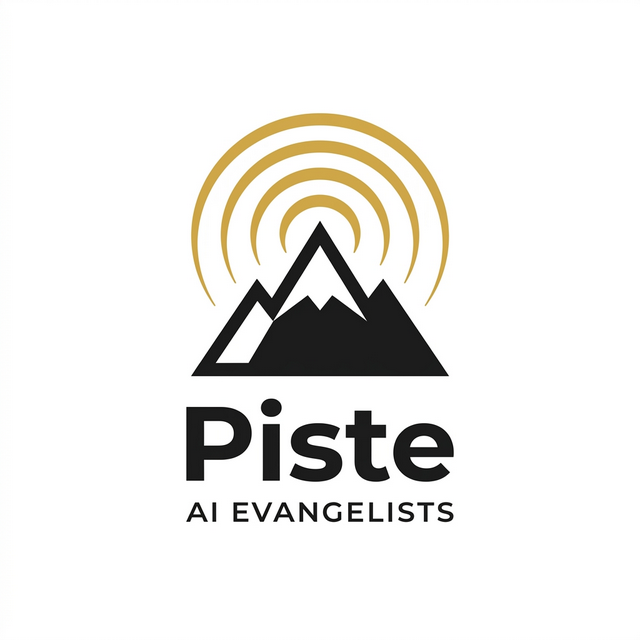

Category
CLAUDE.md・権限・スキル・サブエージェントなど、Claude Code を業務で安全に使いこなすための基礎
2026.08.12
自動化を増やしすぎて全体が見えなくなったときの棚卸し手順を解説。1行7項目の一覧づくり、使われているかを出口で見分ける方法、止める・残すの4基準、安全な止め方3ステップを整理します。
2026.08.11
自動化が「作った本人しか動かせない」状態になるのを防ぐ設計を解説。引き継ぎに必要な3つ、決めごとファイルの5行、入口を1つに固定する考え方、止まったときの3つの確認を整理します。
2026.08.10
自動化で見落とされがちな「世に出す前の確認」を体系化。全数確認をやめる3段階の仕分け、5分で終わるチェックリスト、抜き取り確認の割合の決め方、確認記録の残し方を解説します。
2026.08.09
自動化で最後まで残る不安「戻せるのか」を解消。実際に起きる3つの失敗パターン、戻す手段を3層で持つ考え方、半日で終わる4つの準備、事故時の復旧3ステップを解説します。
2026.08.08
Claude Codeに渡してよい情報と止めたほうがよい情報の線引きを解説。手元で動く仕組みの正しい理解、情報の3分類、伏せて渡す3つの工夫、社内で決める4行のルールを整理します。
2026.08.07
Claude Codeにどこまで任せてよいかを判断する基準を解説。任せてよい仕事の3条件、人が持つべき3つの領域、迷ったときの4つの問い、線引きを社内で共有する方法を整理します。
2026.08.06
測るのは前の時間・今の時間・人が直した回数の3つだけ。1件1行で書ける記録の型と、月末15分の振り返り4項目で、続けるか広げるかを判断できるようにします。
2026.08.05
自動化が途中で止まる、結果が意図と違うといったトラブルは原因が3つに絞れます。非エンジニアでもできる4つの確認手順と、二重実行を防ぐ再発防止策を整理しました。
2026.08.03
Claude Codeの出来が夕方になると落ちる、前に却下した案が復活する。原因はやり取りに不要な前提が積み上がっていることです。用件で区切る、要点だけ残す、前提はルールファイルへ。この3原則を非エンジニア向けに整理しました。
2026.08.02
Claude Codeに毎回同じ注意書きを添えていませんか。CLAUDE.mdに社内ルールを書いておけば、担当者が変わっても同じ品質で作業が進みます。何を書くべきか・書いてはいけないか、階層の使い分けまでまとめました。
2026.08.01
Claude Codeは使うモデルで費用が10倍以上変わります。Opus・Sonnet・Haikuの性格と業務別の選び方、費用が膨らむ典型パターン、月額を予測可能にする運用ルールを非エンジニア向けにまとめました。
2026.07.31
Claude Codeに業務を任せるとき、どこまで自由に動かしてよいのかを決める権限設定と運用ルールを解説。承認が必要な操作の線引き、接続情報の渡し方、作業範囲の限定、記録の残し方まで非エンジニア向けにまとめました。
2026.04.30
Claude CodeのチームAPI（TeamCreate）と画面分割（tmuxパネル連携）で、複数のAIエージェントに別業務を同時並行で担当させる方法を解説。中小企業向け活用5選と非エンジニア向け導入4ステップを紹介。
2026.04.29
WebSearch・WebFetchを活用し、競合価格モニタリング・業界ニュース収集・補助金チェック等のリサーチ業務を自動化する方法を解説。中小企業向け活用5選と非エンジニア向け導入4ステップを紹介。
2026.04.28
Claude CodeのPlanモードを使い、業務改革プロジェクト・新規事業・SOP整備の計画立案をAIに任せる方法を解説。中小企業向け活用5選と非エンジニア向け導入4ステップを紹介。
2026.04.27
Claude CodeのRemote Control機能で外出先のスマホから業務指示・進捗確認・承認まで完結。中小企業向けモバイル経営AI活用5選と非エンジニア向け導入4ステップを解説。
2026.04.26
Skill機能でベテランの業務手順・チェックリストをAIに記憶させ、誰でも再利用できる社内スキル資産に変える方法を解説。
2026.04.24
CLAUDE.md（メモリ機能）で会社・部署・案件単位のルールをAIに常時記憶させ、属人化と毎回指示のロスをまとめて解消する社内標準化ガイド。
2026.04.23
/loopとCronCreateで夜間・早朝・休日の定型業務を無人化。中小企業のAI常駐ワーカー構築と非エンジニア向け導入4ステップを解説。
2026.04.22
Playwright MCP でブラウザを AI が操作。外部連携不可の SaaS もログインごと自動化できる中小企業向け実践ガイド。
2026.04.21
受注メール・会議終了・レポート生成のイベントで自動発火するAI。Hook活用5選・業種別シーン・誤発火対策を解説。
2026.04.20
繰り返し業務をテンプレート化し、一行で呼び出す方法を解説。中小企業で使える業務テンプレート5選と業種別活用シーン、非エンジニア向け導入4ステップ。
2026.04.19
役割を分けた複数のAIに業務を並列処理させる方法を解説。営業・経理・マーケ等のチーム編成5パターンと非エンジニア向け導入4ステップ。
2026.03.28
日本語で指示するだけでプログラムが完成。ITに詳しくない経営者でも業務自動化が実現できるClaude Codeの魅力と活用法を解説。